「全州韓二石豆腐石鍋專門店」在雲林斗六的中堅西路上。 整條路都是吃的，每間的生意都不錯，白色招牌，竹子的門面，滿好認。 斜對面就是雲林國中，若待到晚上，斗六人文夜市就在附近很好逛。
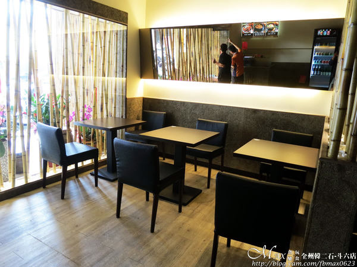 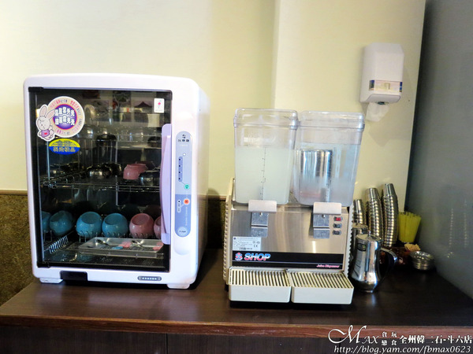內用有RO冰水與檸檬水可自取，餐具用紫外線消毒過。
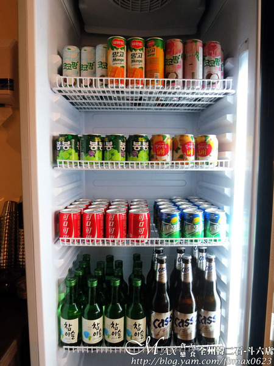冰箱內是韓國飲料、可樂及雪碧。 如想感受跟韓國人邊吃鍋物炸雞配酒飲。 全州也有真露燒酒和CASS啤酒。
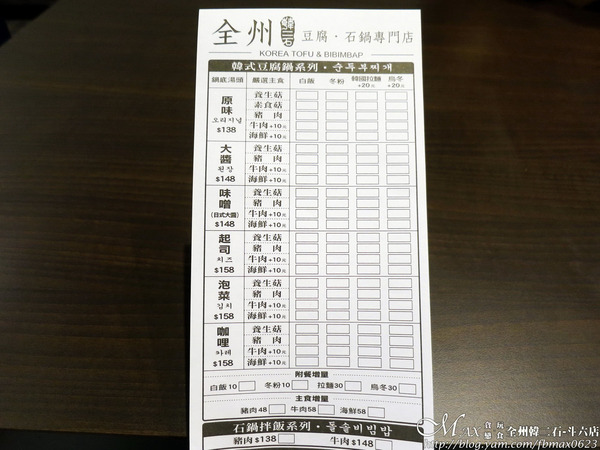 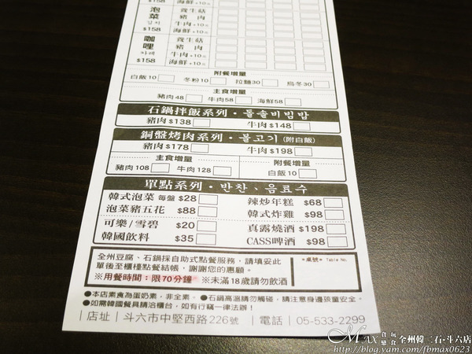全州的菜單，主要以韓式豆腐鍋和石鍋拌飯。 豆腐鍋共有6種湯頭，選主食，如要牛肉和海鮮另加10元。 最後決定要白飯、冬粉、韓國拉麵和烏冬，後2種需加20元。 而跟嘉義總店不同的是，雲林斗六店有賣銅盤烤肉，居然200元有找。 還有單點系列，每次來韓式炸雞必點，後來的新歡是泡菜豬五花。 再到櫃台結帳即可，免服務費，用餐時間限70分鐘。
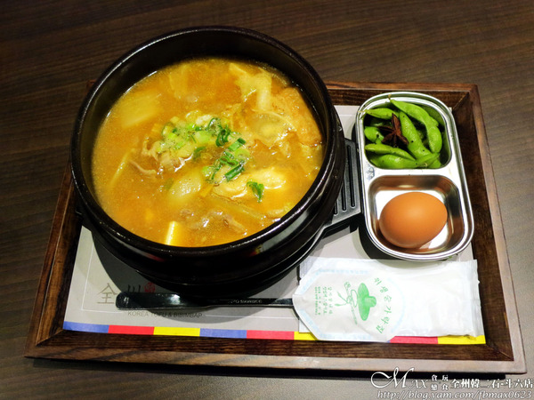店家隱藏版的咖哩湯頭，點豆腐鍋均附一顆土雞蛋與小菜一碟。 服務人員建議先喝一口原湯，將雞蛋打下去攪拌，會增加湯頭的濃度。
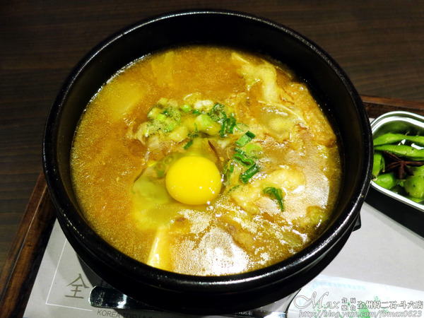鍋內的配料有金針菇、秀珍菇、豆腐、木耳、黑輪、年糕、蛤蜊和豬肉。 咖哩湯頭十分香濃，微帶些稠感，猶如多國咖哩的綜合風味。 熱騰騰的喝，每一口的味道都在嘴裡打轉，豬肉片軟嫩，配料豐盛，銷魂美味。
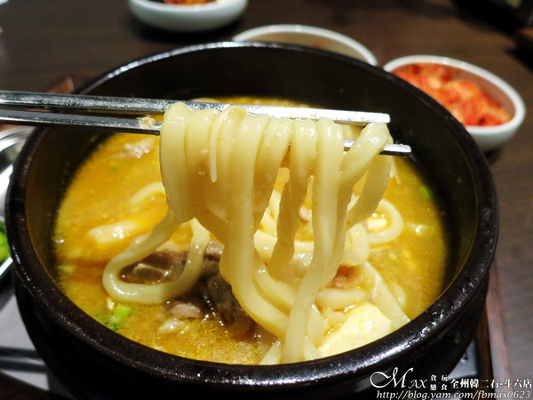選擇了烏冬，吸附咖哩湯頭後，滑溜Q彈，跟咖哩竟如此合拍。
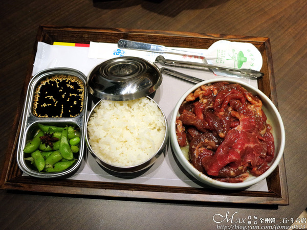銅盤烤肉是嘉義總店沒有，雲林店限定。 一大盤的主食牛肉，附碗白飯、一碟小菜與特調烤肉醬汁。
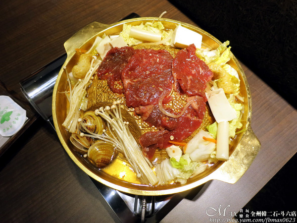牛肉盤足足有220公克，堆的跟一座小山似，看了好過癮XD 將肉平鋪放在銅盤上，銅盤周圍有菜類、豆腐、年糕、蛤蜊等。 會先幫忙加高湯，將肉煮熟後，再去喝口湯頭，味道更加清甜。 如湯頭覺得不夠，在餐具區可自取高湯自己加囉！
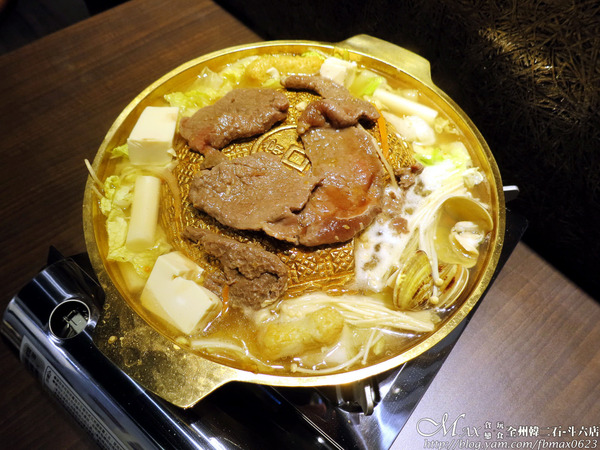牛肉有先醃製過，每一片肉片不會很小片，厚實也夠。 烤過後，單吃就很夠味，肉質紮實微軟，自然的鹹香芬芳。 也能佐上店家特調烤肉醬汁，鹹甜滋味，也很加分。
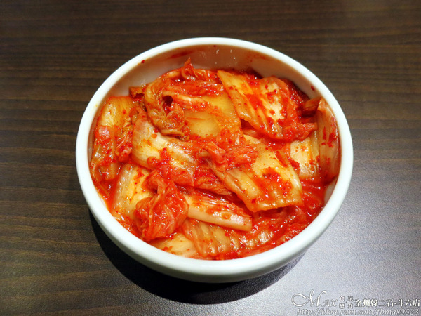韓式泡菜酸度與辣度都來的高些。 辣度是有後勁的，後來有將其包上烤肉，挺不賴的。
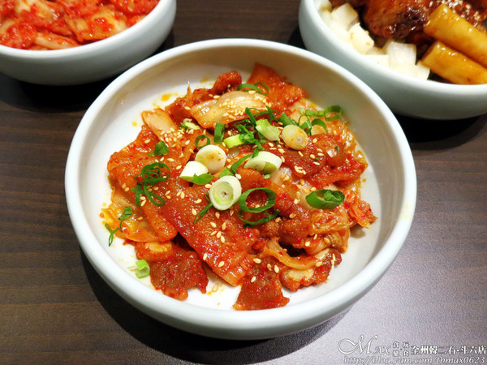豬肉先醃過，泡菜帶辣，微酸中且脆口。 肉質嫩，有筋的油花感，兩者中和，酸酸甜甜。 豬肉的香氣，非常涮嘴，很下飯，好吃。
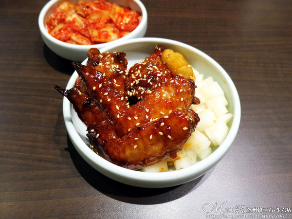嗶嗶嗶～每次來全州必點的韓式炸雞。 一份是雞腿與雞翅各2隻，還有年糕與醃的白蘿蔔。
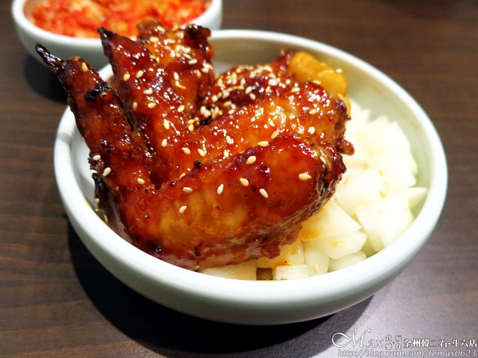炸雞的外皮甜甜的，辣度些許，口感酥脆。 肉質鮮嫩多汁，完全不柴，吮指回味。 搭配醃蘿蔔，清爽不少，2人共享一份剛剛好。
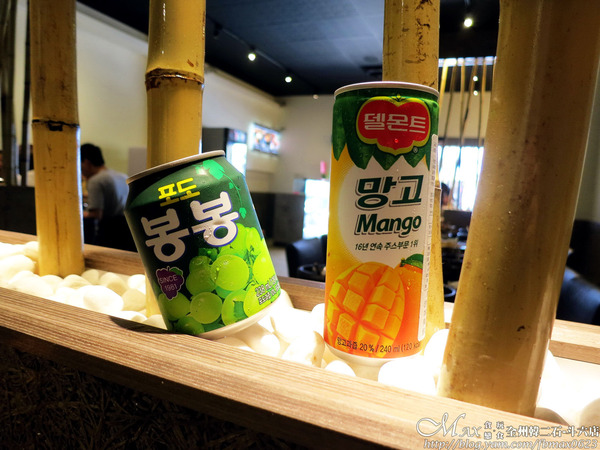左邊葡萄汁35元、右邊芒果汁35元 葡萄汁帶有果粒，清爽不錯。 芒果汁是有稠度的，香甜正點。
引自:http://blog.yam.com/fbmax0623/article/144256315